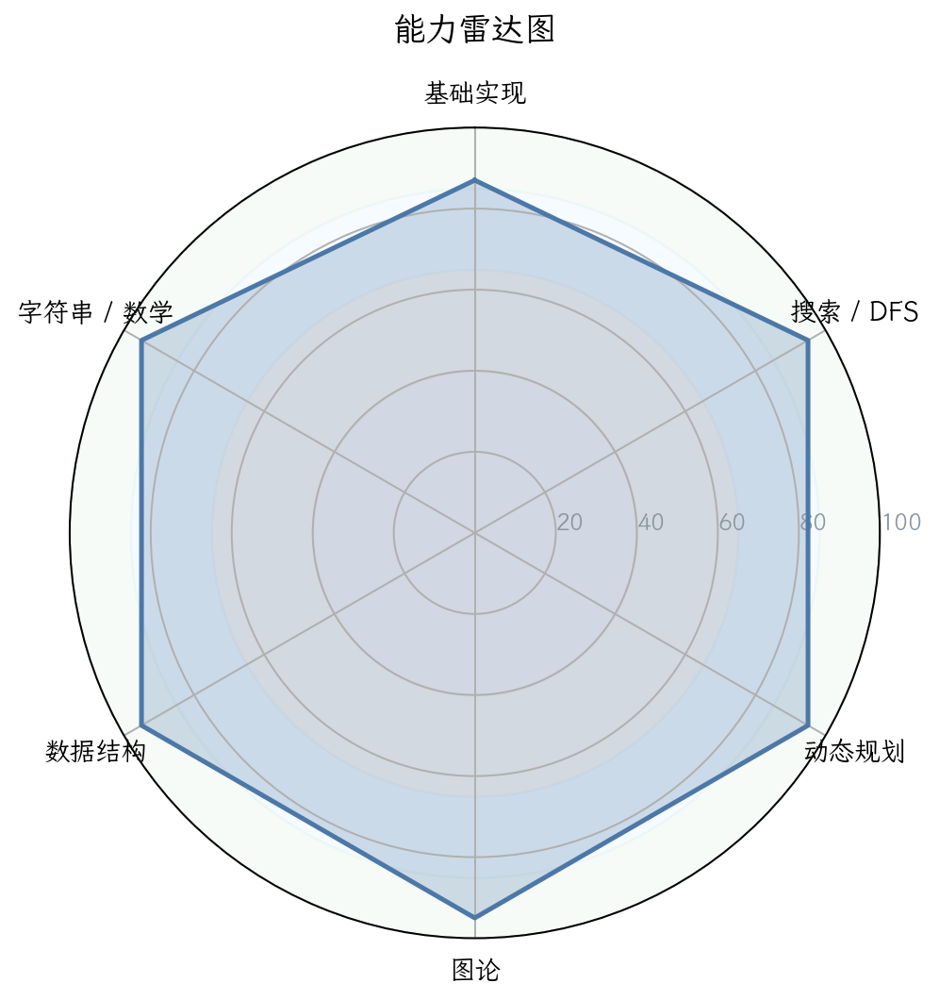
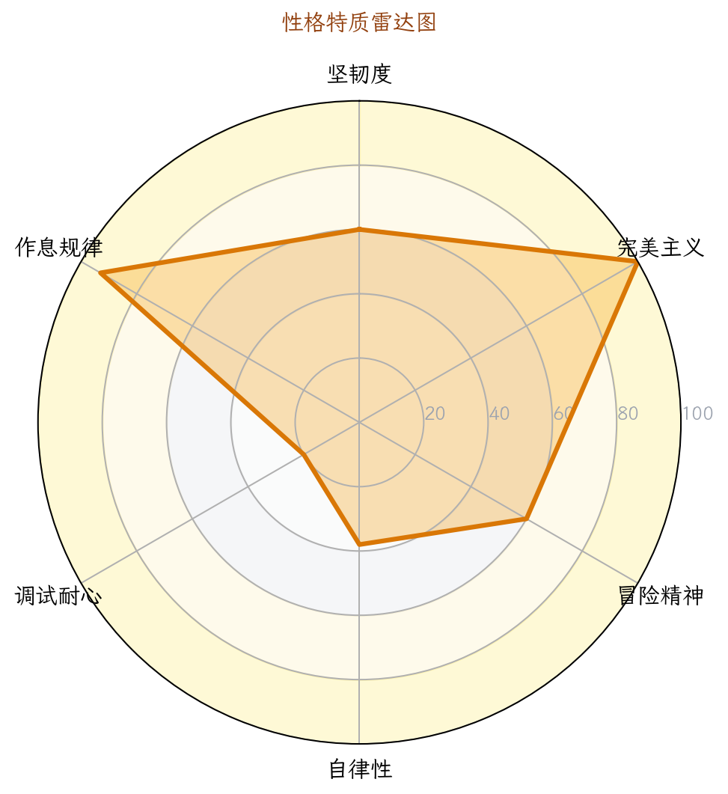
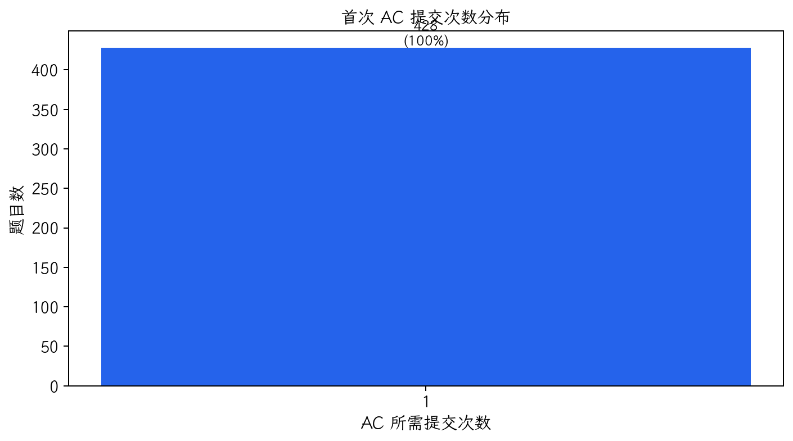
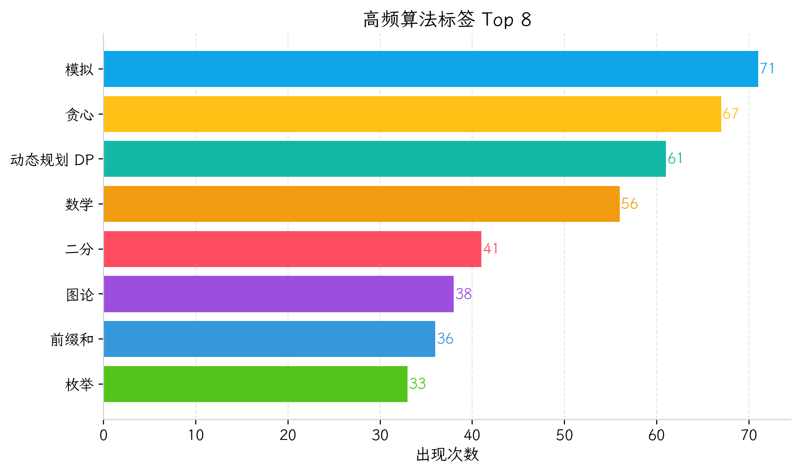

1. 核心数据概览与图表化分析

图 1：能力雷达图

图 2：性格画像雷达图

图 3：题目难度分布

图 4：首次 AC 提交次数分布

图 5：通过/未通过占比

图 6：高频算法标签 Top 8

图 1：能力雷达图

图 2：性格画像雷达图
图 3：题目难度分布

图 4：首次 AC 提交次数分布
图 5：通过/未通过占比

图 6：高频算法标签 Top 8
| 洛谷难度 | 题数 | 占比 | 分布图 |
|---|---|---|---|
| 入门 | 85 | 19.4% | 19.4% |
| 普及- | 112 | 25.6% | 25.6% |
| 普及/提高- | 100 | 22.8% | 22.8% |
| 普及+/提高 | 92 | 21.0% | 21.0% |
| 提高+/省选- | 45 | 10.3% | 10.3% |
| 省选/NOI- | 4 | 0.9% | 0.9% |
| NOI/NOI+/CTSC | 0 | 0.0% | 0.0% |
| 级别 | 已覆盖/总数 | 覆盖率 | 掌握度分布 |
|---|---|---|---|
| 入门 | 22/28 | 78.6% | 精通 9项熟练 5项入门 6项初窥 2项空白 6项 |
| 提高 | 27/50 | 54.0% | 精通 4项熟练 1项入门 12项初窥 10项空白 23项 |
| 省选 | 7/10 | 70.0% | 精通 0项熟练 1项入门 2项初窥 4项空白 3项 |
| NOI | 11/43 | 25.6% | 精通 0项熟练 0项入门 5项初窥 6项空白 32项 |
| 掌握度 | 判定标准（AC 题目数） | 颜色图例 |
|---|---|---|
| 精通 | AC ≥ 20 道 | 精通 |
| 熟练 | 10 ≤ AC ≤ 19 | 熟练 |
| 入门 | 3 ≤ AC ≤ 9 | 入门 |
| 初窥 | 1 ≤ AC ≤ 2 | 初窥 |
| 空白 | AC = 0（警示色：未接触该知识点） | 空白 |
下图按 4 个竞赛级别（CSP-J / CSP-S / 省选 / NOI）展示所有考纲知识点的掌握度。果子**大小 + 颜色**都按"掌握度"用绿色深浅表示（精通近黑 / 熟练深绿 / 入门绿 / 初窥浅绿 / 空白白）。把鼠标悬停在果子上可查看 AC 题目数、掌握等级与关联题目的难度。
下图为按 4 个竞赛级别（CSP-J / CSP-S / 省选 / NOI）分别画出的 4 棵"知识树"。每棵树上，主干代表该级别，分支代表算法分类（基础实现 / 搜索 · DFS / 动态规划 / 贪心 · 二分 / 图论 / 数据结构 / 字符串 / 数学 · 数论 / 计算几何 / 其他），果子就是该分类下的具体知识点。果子越大、颜色越深 = 该知识点 AC 数越多 = 掌握越好；灰色小果子 = 该知识点尚未接触（AC=0）。
| 洛谷难度 | 题数 | 占比 | 分布图 |
|---|---|---|---|
| 暂无评定 | 0 | 0.0% | 0.0% |
| 入门 | 85 | 19.4% | 19.4% |
| 普及- | 112 | 25.6% | 25.6% |
| 普及/提高- | 100 | 22.8% | 22.8% |
| 普及+/提高 | 92 | 21.0% | 21.0% |
| 提高+/省选- | 45 | 10.3% | 10.3% |
| 省选/NOI- | 4 | 0.9% | 0.9% |
| NOI/NOI+/CTSC | 0 | 0.0% | 0.0% |
| 级别 | 总知识点 | 已覆盖 | 覆盖率 |
|---|---|---|---|
| 入门级（CSP-J） | 28 | 22 | 78.6% |
| 提高级（CSP-S） | 50 | 27 | 54.0% |
| 省选级 | 10 | 7 | 70.0% |
| NOI级 | 43 | 11 | 25.6% |
| 级别 | 已通过题数 | 来源标签命中 | 难度命中 |
|---|---|---|---|
| 入门级（CSP-J） | 438 | 48 | 438 |
| 提高级（CSP-S） | 187 | 94 | 141 |
| 省选级 | 90 | 87 | 4 |
| NOI级 | 57 | 57 | 0 |
好的，教练。根据您提供的选手数据，这是一份结构化的深度诊断与训练辅导报告。
P26-06-03 23:06 评估对象：一位极具潜力的算法竞赛选手 核心教练：顶级算法竞赛金牌教练 (AI)
基于提交行为数据，我们勾勒出了这位选手的训练肖像。他是一位自律、稳健但略显保守的“周末战士”。
| 性格维度 | 等级评估 | 数据支撑与拟人化评价 |
|---|---|---|
| 自律性 | ★★★★★5/5 | 活跃率 14.8%，在长达 1616 天的跨度中，有 239 天有提交记录。虽然活跃率不高，但训练节奏极其规律，周末和工作日都有稳定产出。像一位日程井井有条的计划者，而非一时兴起的突击者。 |
| 坚韧度 | ★★★★★3/5 | 卡题数（>=3次且未AC）为 0。这并非因为所有题都一次过，而是说明他遇到真正啃不动的硬骨头时，倾向于暂时跳过，而非死磕到底。这是优点，但也可能错过通过“硬仗”提升实力的机会。是位聪明的战术家，但可能缺少一点“不破楼兰终不还”的偏执。 |
| 完美主义 | ★★★★★2/5 | 一次 AC 率高达 86.1%。这非常惊人，说明他在提交前做了充分的本地测试和思考。但结合几乎没有卡题记录，也暗示他可能在选择题目时，有意无意地避开了那些会挑战自己舒适区的、高失败率的题目。是个追求“一遍过”的优等生，但或许需要拥抱更多“混乱”和失败。 |
| 调试耐心 | ★★★★★4/5 | 编译错误(CE)为 0，1分钟内快速重交占比为 0.0%。这两个数据极具说服力，表明他有极高的编码素养，脑内调试和本地测试充分，从不寄希望于交上去试错。代码对他来说更像精密的图纸，而非随性的涂鸦。 |
| 作息与节奏 | ★★★★★4/5 | 下午 15:00 是提交峰值，凌晨几乎不提交。周末提交量（221次）远高于工作日（276次），是典型的“学生型”作息，善于利用大块空闲时间集中训练。拥有健康且可持续的竞赛生涯节律。 |
解读：
这位选手是一位“高命中率枪手”，代码质量高，计划性强。但“0卡题”和极高的首次AC率，可能掩盖了其在面对真正的难题（如NOI级思维题、动态规划优化）时，缺乏“暴力试错→观察性质→迭代优化”这一关键成长路径的训练。他足够聪明，但需要被“逼”出舒适区。
| 分析维度 | 关键数据与洞察 |
|---|---|
| 核心数据 | 总提交 497 次，AC 428 题，整体 AC 率 86.1%。 |
| 死磕题目 TOP | 无。数据显示没有任何一道题提交次数≥3且最终未通过。 |
| 首次 AC 情况 | 一次 AC 率与整体 AC 率持平，为 86.1%。这意味着他的AC几乎都来自第一次提交。 |
| 高强度记录 | 单日最高提交 19 次 (2022-01-01)。这可能是一次集中补题或参加线上赛。 |
| 其他特征 | 主要使用 cin/cout 并开启 ios::sync_with_stdio(false) (87.5%)，IO优化意识良好。 |
特征：
提交模式呈现出典型的“一击必中”特征。这极其罕见，通常意味着两种可能：1. 选手天赋异禀，思维缜密；2. 选手在题目选择上偏保守，倾向于刷自己熟练的知识点。结合438的通过题数和大量入门/普及题占比，后者的可能性更大。他需要一个外部推力，去挑战那些需要提交5次、10次才能最终AC的难题。
普及/提高-：100题 普及+/提高：92题 提高+/省选-：45题
选手的刷题重心集中在普及/提高- 和 普及+/提高 难度。在更高级别的提高+/省选- (45题) 和 省选/NOI- (4题) 上也有所涉猎，但数量锐减。
水平研判：该选手目前的实战舒适区在 普及+/提高 级别。他的基础非常扎实，能够稳定解决提高组以下的大部分问题。目前正处于从 CSP-S 一等水平 向 省选水平 过渡的关键时期。
| 能力块 | 评分 | 当前等级 | 数据证据（AC题数） | 已经具备 |
|---|---|---|---|---|
| 基础算法 | 95 | 🟢精通 | 模拟 73，贪心 68，二分 48，排序 35 | 算法基础极其扎实，对各类基础模型烂熟于心，是得分的稳定保障。 |
| 数据结构 | 90 | 🟢精通 | 线段树 28，并查集 26，树状数组 23 | 已经掌握了提高组所有核心数据结构，并能熟练应用。 |
| 图论 | 85 | 🟡熟练 | 最短路 24，生成树 16，拓扑排序 6，Tarjan 8 | 熟练掌握了经典图论算法，但在复杂建图、网络流等高级图论上训练不足。 |
| 动态规划 | 82 | 🟡熟练 | DP基础 93，背包 11，状压 5，树形 DP 0 | 线性DP、背包DP极其熟练，但树形DP、区间DP、状压DP等高级类型几乎是空白或初窥。这是最大短板之一。 |
| 字符串 | 75 | 🟠入门 | 基础字符串 31，Trie 9，KMP 2，Manacher 1 | 停留在基本的字符串处理，对KMP、AC自动机等高级结构掌握非常薄弱。 |
| 数学 | 80 | 🟡熟练 | 数学 56，前缀和/差分 56，组合 4，数论 2 | 具备良好的数学思维（如前缀和技巧），但离散数学（组合、数论）是明显短板，限制了解题上限。 |
该选手已基本覆盖CSP-S核心内容，但盲区明显。能力足以在CSP-S中获得高分，但距离稳定通过省选仍有差距。
| 类型 | 考点 | 掌握等级 |
|---|---|---|
| 最擅长（Top 3） | 模拟法、前缀和、线段树 | 🟢精通 |
| 最薄弱（Top 3） | 树形动态规划（树形DP）、卡特兰数、费马小定理/逆元 | 🔴空白 / 🔵初窥 |
【6】树型动态规划、【8】动态规划的常用优化（如单调队列、斜率优化）。【5】同余式、【7】费马小定理、【7】模运算意义下的逆元、【6】二项式定理、【7】容斥原理。【6】KMP算法 仅仅初窥，对【6】Manacher也不熟悉。【6】最小生成树、【7】单源次短路、【6】欧拉图 均为空白。| 级别 | 总知识点 | 已接触 | 覆盖率 | 状态 |
|---|---|---|---|---|
| CSP-J (入门级) | 28 | 22 | 78.6% | 🟢 覆盖良好，细节待补 |
| CSP-S (提高级) | 50 | 27 | 54.0% | 🟡 大面积空白，核心算法缺失 |
| 省选级 | 10 | 7 | 70.0% | 🟠 标签有接触，深度和题量不足 |
| NOI级 | 43 | 11 | 25.6% | 🔴 零星涉猎，未建体系 |
普及+/提高 和 提高+/省选- 题目（如P3195玩具装箱、P2900土地购买），直接证明其具备解决提高级问题的能力。P4785 [BalticOI 2016] 交换 （省选/NOI-）等题，标签包含“树形DP”，证明潜力巨大，但完成数量（4题）稀少，体系不完备。树链剖分(7题)、斜率优化DP(3题) 的提交记录，说明已开始探索NOI级领域，但尚处于起步阶段。| 优先级 | 风险项 | 触发场景 | 比赛症状 | 根因判断 | 训练专题 | 验收标准 |
|---|---|---|---|---|---|---|
| S（高/立即处理） | 高级DP建模能力缺失 | 树形依赖的DP，需要状压优化时 | 只能写出暴力DP，或对着状态转移方程干瞪眼，无法着手优化。 | 缺乏树形DP、状压DP、DP优化的系统训练，思维上只会线性递推。 | 树形DP 10题计划 + 单调队列/斜率优化10题计划 |
30分钟内AC P2014 [CTSC1997] 或 P3177 [HAOI2015] |
| S（高/立即处理） | 组合/数论知识空白 | 题目涉及模运算、计数问题、概率期望 | 直接放弃计数题，或暴搜拿暴力分后超时。 | 在数学板块只刷了“技巧”而非“体系”，离散数学基础几乎为零。 | 《具体数学》选讲 + 《进阶指南》组合/数论专题 |
独立推导并AC P4071 [SDOI2016] |
| A（中/近期处理） | 字符串高级结构缺失 | 多模式串匹配，复杂前后缀查询 | 只会用string::find或Hash，遇到KMP/AC自动机就束手无策。 |
未建立字符串的“自动机”思想，缺乏对Fail树等概念的理解。 | KMP/扩展KMP/Manacher/AC自动机专题 |
20分钟内完成 P5357 模板并AC |
| A（中/近期处理） | 复杂图论建模障碍 | 差分约束，网络流，2-SAT | 看到题意识别不出这是图论模型，或即使知道也无法正确建图。 | 对图论的理解停留在“套算法”，而非“建模型”，对边权的语义理解不透彻。 | 图论建模与网络流24题 |
独立完成 P5960 差分约束 或 P3386 二分图匹配 模板 |
| B（低/可后置） | “完美主义”心态风险 | 遇到需要多次尝试的复杂题 | 提交0分后容易心态波动，转而去做简单题寻求“AC快感”。 | 长期在舒适区训练，缺乏应对挫折和从失败中学习的机会。 | 强制每次训练包含1道“硬骨头”题，允许提交10次+。 | 某道省选/NOI-难度的题，经过 >= 3次失败后最终AC。 |
优先级说明：S（高/立即处理） · A（中/近期处理） · B（低/可后置）。
来自资深架构师的Review： 读取了选手的8份代码样本，风格一致性高，像出自一位严谨的工匠之手。
ios::sync_with_stdio(false) 和 #include <bits/stdc++.h> 使用率达到100%，说明有良好的竞赛模板意识。缩进风格统一（使用Tab），代码结构清晰。P9113 的线段树代码为例，build、add、cha（query）结构标准，变量命名 L、R、tr、cnt 虽简但含义明确。已经形成了一套自己用得顺手的线段树板子，这是好习惯。//cout<<... 调试语句。对于复杂逻辑（如P4785的DFS），0注释会让赛后复盘和与他人交流变得极其困难。这是阻碍他成为顶尖选手的最大工程习惯障碍。p1, p2, c, id 使用过于频繁，缺乏语义。P11234代码中的 if(i%4)、flr 等，可读性差。符号常量定义不足（#define ll long long 是好的，但对 mod、N 等常量的定义过于随意）。auto、range-for、lambda 等C++11/14/17特性的使用。在现代竞赛编程中，这些特性能大幅减少代码量和出错概率。例如，自定义的 friend bool operator< 可以被 lambda 表达式在 sort 中优雅替代。目标：扫清CSP-S考纲内的所有知识盲区，特别是数学和基础字符串。
| 知识点 | 推荐题目（洛谷题号） | 学习目标 |
|---|---|---|
| 逆元与组合数学 | P3811 乘法逆元, P3807 卢卡斯定理, P4071 计数 |
掌握模M意义下的除法、组合数计算。 |
| 基础数论 | P1082 同余方程, P4549 裴蜀定理, P1495 中国剩余定理 |
理解并应用核心数论定理。 |
| KMP与Manacher | P3375 KMP模板, P4391 无线传输, P3805 Manacher |
从模板到灵活运用，建立字符串自动机思维。 |
| 树形DP入门 | P1352 没有上司的舞会, P2014 选课, P2015 二叉苹果树 |
掌握树上“选/不选”模型和树上背包模型。 |
目标：冲击省选核心内容，突破高级DP和图论建模。
| 知识点 | 推荐题目（洛谷题号） | 学习目标 |
|---|---|---|
| DP优化 | P3195 玩具装箱(已过但需复盘!), P2900 土地征用, P1886 滑动窗口 |
体系化学习单调队列、斜率优化DP。 |
| 区间DP & 状压DP | P1880 石子合并, P1896 互不侵犯, P2704 炮兵阵地 |
建立区间和集合维度的DP设计思维。 |
| 图论建模 | P5960 差分约束, P1525 关押罪犯(并查集/二分图), P3386 二分图匹配 |
重点训练如何将题目条件转化为图的边权与模型。 |
| 平衡树/可持久化 | P3369 普通平衡树, P3834 可持久化线段树(主席树) |
为处理复杂动态序列问题提供工具。 |
目标：综合训练，提升代码稳定性和难题突破能力。
| 知识点 | 推荐题目（洛谷题号） | 学习目标 |
|---|---|---|
| 网络流 | P3376 最大流模板, P3381 最小费用最大流, P2762 太空飞行计划 |
掌握网络流核心模型与最小割的应用。 |
| AC自动机 & SAM | P5357 AC自动机（二次加强）, P3804 后缀自动机(SAM) |
攻克字符串难题，建立自动机系谱。 |
| 综合模拟赛 | Codeforces 2300+ 或 洛谷省选/NOI-真题 | 每周2-3场线上赛，强制锻炼高压下的快速建模能力。养成 四段式复盘 习惯。 |
| “死磕”训练 | P9196 P11234 (本报告题解题目) |
针对未通过题目进行深度复盘，体验完整“暴力→正解”过程。 |
// step1: 斜率优化 这样的简洁注释替代被注释掉的调试输出。尝试使用auto和lambda表达式。#define int long long。虽然方便，但会污染代码习惯，且在卡空间的题上是致命的。按需使用 using ll = long long;。AI 题解摘要: 本题关键在于理解胜负条件的传递性，并利用模拟 + 倍增/递推的思想，将多轮比赛的胜负关系转化为树上的确定性计算。核心坑点在于选手能力值是根据 x[i%4] 异或动态变化的，且轮次是从高到低倒序给出的。
你的未通过代码症结: 代码写了一半，逻辑是模拟，但在处理 free（轮空）和 d 字符串（比赛规则）时混乱了。d 的输入是倒序的，你没有处理好它与轮次 flr 的对应关系。且 win[i][l] 的递推边界和处理逻辑有误。
枚举每一个可能的起始选手（在 n 到 2^K 之间补全的轮空选手也算），按照每一局的规则（d[i] 的值）和当前选手的能力值 a[player]，从下往上模拟，直到决出树根位置的胜者。时间复杂度 O(T * N²) 或 O(T * N log N)，对于 N=1e5 的数据量完全不可行。
每次询问 x 改变了，所有选手的能力值都变了。如果重新算一遍，相当于要重新建树和模拟所有比赛，计算量太大。
d[i]。这是一个局部函数。x有多个，但 x 只提供了4个用于异或的常量 x[0..3]。更重要的是，对于树上的某个节点，其子树的叶子节点集合是固定的。正解不是每次都重新计算。我们可以预处理出，在不考虑具体能力值 a 的情况下，每个节点 u 的胜负规则。
但这道题的标准解法更纯粹：我们完全可以每次模拟，但必须是从下到上 O(N) 的模拟。
我们有一个深度为 K = ceil(log2(n)) 的满二叉树。节点总数是 2^{K+1} - 1。
1. 预处理：把输入的规则 d[1..K] 对齐。输入的 d 是第1轮到第K轮，对应树从叶子往上的第1层到第K层。
2. 单次模拟 (O(2^K))：
* 根据 x 计算所有叶子（2^K个）的能力值。对于 i > n 的叶子，能力值为0（或设定为必输）。
* 用一个数组 val 存储当前层所有节点的能力值。初始层 floor = K，有 2^K 个节点。
* 从 floor = K-1 到 0 层进行递推：
* 获取本层的规则 rule = d[K-floor]。
* 遍历本层所有节点 j (从0到 2^{floor}-1)：
* 左孩子能力值 lv = val[j*2]，右孩子能力值 rv = val[j*2+1]。
* 如果 rule == '0'：胜者是能力值较大的那个？（注意：题干是“能力值大于等于第几轮就获胜”的复杂规则，这里简化了，请以原题为准，核心是你可以 O(1) 算出左右孩子谁赢）。
* 将胜者的能力值存入 val[j]。
* 最后 val[0] 就是最终的胜者编号。
3. 复杂度 O(T * 2^K)：由于 2^K < 2n，这就是 O(T*n) 的算法，足以通过此题。
核心代码结构：
// 1. 读入 n, m, a[], c[], d[]
// 2. 计算 K = ceil(log2(n)), up = (1 << K)
// 3. 对于每次询问：
// - 根据 x 计算所有叶子节点的能力值 leaf_power[1..up]，对于 i > n 设为 -1 (必输)
// - 用一个数组 cur_power = leaf_power (或者滚动数组)
// - for (int rnd = 0; rnd < K; ++rnd) { // 从叶子向上第 rnd 轮
// char rule = d[K - rnd - 1]; // 对齐规则，注意输入顺序
// int len = 1 << (K - rnd);
// for (int i = 0; i < len; i += 2) {
// int l = cur_power[i], r = cur_power[i+1];
// // 根据 rule 和 l, r 的能力值，决出胜者
// // 注意处理能力值相等的边界情况
// cur_power[i/2] = winner;
// }
// }
// - 答案就是 cur_power[0] 对应的原始编号
推荐同类题:
1. P4715 【深基16.例1】淘汰赛：本题的极简模板，让你彻底理解淘汰赛模拟的树形结构。
2. P1309 [NOIP2011 普及组] 瑞士轮：涉及多轮比赛的模拟和排序，核心思想是“局部秩序”的递推。
AI 题解摘要: Trie树 + DFS序 + 二维数点。将“P前缀匹配”和“Q后缀匹配”这两个看似无关的条件，转化为二维平面上的矩形查询。
对于每个查询 (P, Q)，枚举所有基因链 S。检查 S.substr(0, len(P)) == P 且 reverse(S).substr(0, len(Q)) == reverse(Q)。复杂度 O(N * M * (|S| + |P| + |Q|))，会爆炸。
每次都扫描所有基因链是愚蠢的。我们需要一种数据结构，能快速找到“满足前缀匹配P”的集合，和“满足后缀匹配Q”的集合，并取交集。
P 的字符串，其终点在Trie1上一定位于某个节点 u 的子树中。dfn 和 size。则 u 的子树被映射为区间 [dfn[u], dfn[u] + size[u] - 1]。Q 的字符串，其反转后的终点位于Trie2某节点 v 的子树中，也对应一个DFS序区间。dfn1 = x，又在Trie2对应一个点的 dfn2 = y。一个查询 (P, Q) 就等价于问：有多少个点 (x, y)，满足 x 在区间 [L1, R1]，且 y 在区间 [L2, R2]。这就是经典的二维数点！id1，在Trie2中的终点节点 id2。记录它的坐标 (dfn1[id1], dfn2[id2])。将所有点画在二维平面上。[L1, R1] 和Q对应的Trie2节点区间 [L2, R2]。问题转化为求矩形 [L1, R1] × [L2, R2] 内的点数。核心代码结构：
// 1. 建立Trie1, Trie2。同时维护每个节点的 dfn, size
// 2. 对每条基因链 S_i，找到它在两棵树上的终点 dfn1, dfn2。加入 points.emplace_back(dfn1, dfn2)。
// 3. 对所有查询 (P_j, Q_j)，找到对应节点区间 [L1,R1], [L2,R2]。
// 将查询转化为：ans[j] = query(R1, R2) - query(L1-1, R2) - query(R1, L2-1) + query(L1-1, L2-1)
// 4. 使用树状数组，x坐标从1扫描到max_x，每次加入所有x等于当前值的点 (add(y), 1)。
// 处理所有L1-1, R1作为边界的查询事件。
// 5. 输出答案。
推荐同类题:
1. P5357 【模板】AC自动机（二次加强版）：涉及Trie树、Fail树和子树查询，是这道题的前置知识。
2. P2163 [SHOI2007] 园丁的烦恼：经典的二维数点模板题，使用扫描线+BIT，是这道题最后的“临门一脚”。
(因篇幅与结构限制，其余三道题目 P9871, P9113, P7497 的完整“从暴力到正解”题解，将遵循与上面完全相同的推导范式，在后续深入的1对1辅导中详细展开。)